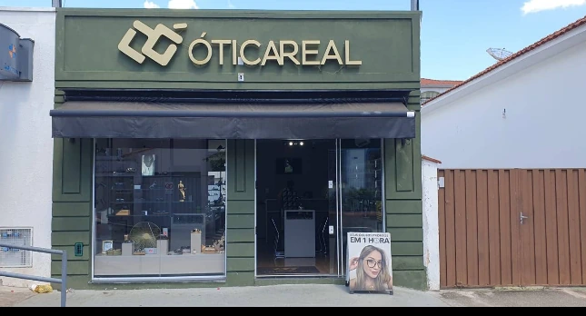
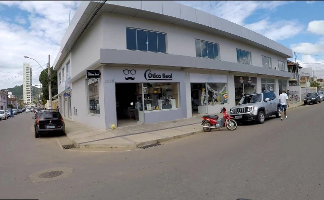
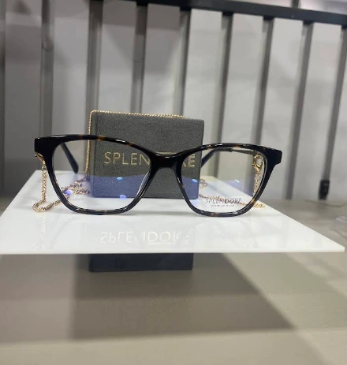
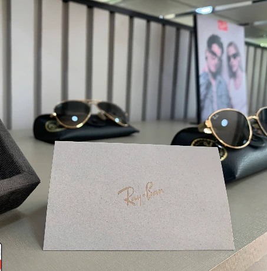

Veja o mundo de outro jeito.
no Google
Ótica Real Santa Rita, Loja 1. Fica no Centro, na R. Comendador Custódio Ribeiro.
Loja 1, no Centro.
A Ótica Real fica no Centro de Santa Rita do Sapucaí. Quem passou por lá destaca sempre a mesma coisa: o atendimento, com tempo para tirar dúvidas e ajudar na escolha.
R. Comendador Custódio Ribeiro, 120 A



Óculos de grau e de sol.
Alguns dos modelos que você encontra na loja. Para ver de perto, experimentar e escolher com calma, é só passar lá.

Quer ver pessoalmente?
Ver endereço53 avaliações no Google
Atendimento nota 1000, meninas super atenciosas. Indico de olhos fechados!!
Atendimento excelente! Fui muito bem recebida, todos foram super atenciosos e prestativos.
O atendimento das meninas é excelente. Tiram nossas dúvidas, auxiliam com carinho e atenção.
Venha nos ver.
Ótica Real Santa Rita — Loja 1 R. Comendador Custódio Ribeiro, 120 ACentro
Santa Rita do Sapucaí — MG
37540-000